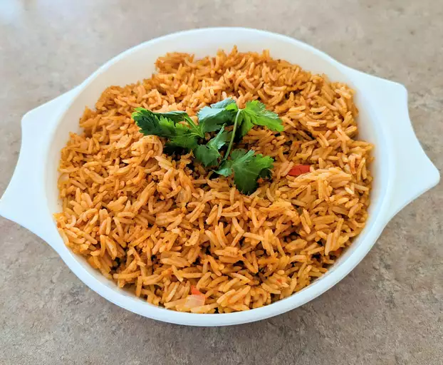
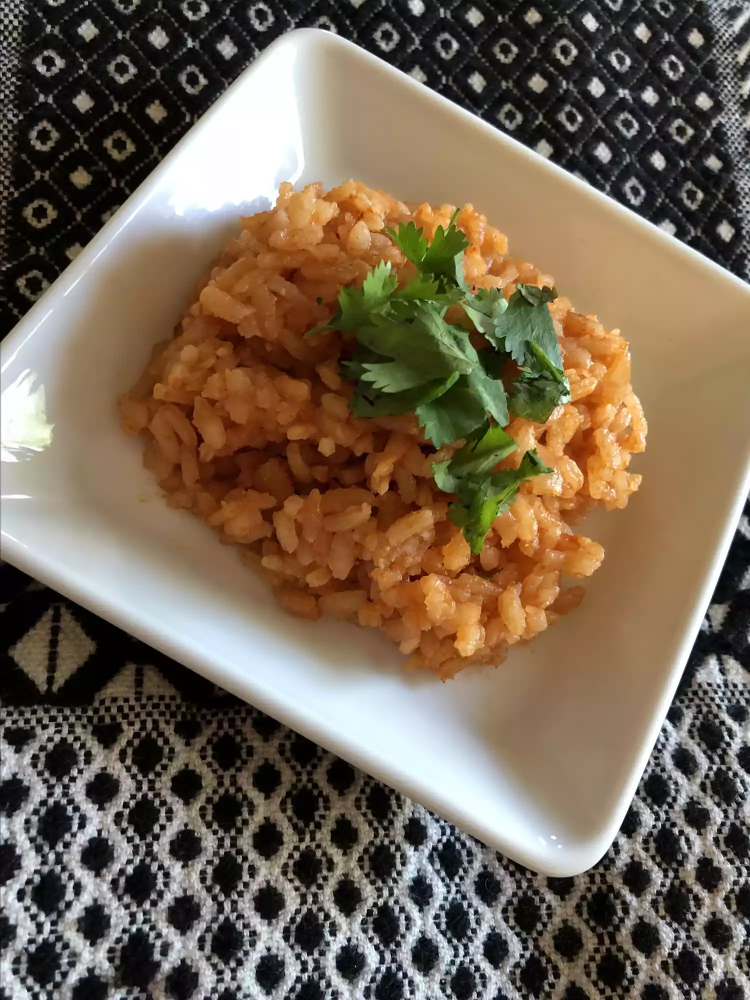

Best Spanish Rice

Description
This Spanish rice recipe is easy to make and very tasty thanks to
the combination of picante sauce and chicken broth.
You'll find a detailed ingredient list and step-by-step instructions
in the recipe below.
Ingredients
- 2 tablespoons oil
- 2 tablespoons chopped onion
- 1 ½ cups uncooked white rice
- 2 cups chicken broth
- 1 cup picante sauce
Steps
- Heat oil in a large, heavy skillet over medium heat. Add onion; cook and stir until tender, about 5 minutes.
- Add rice; cook and stir until rice begins to turn golden brown. Stir in chicken broth and picante sauce. Reduce heat,
cover, and simmer until liquid has been absorbed, about 15 to 20 minutes.

My spanish rice is ready to serve as a side to
beef enchiladasor
chicken enchiladas.